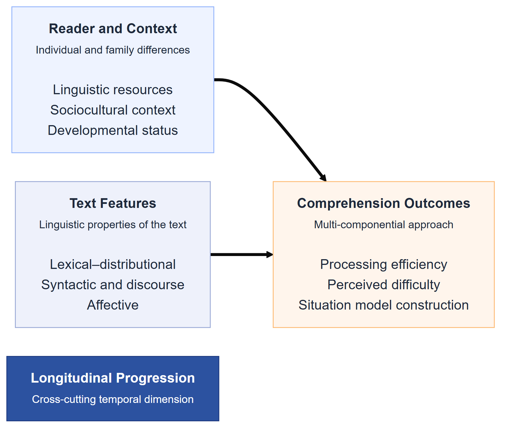

Multimodal Text Reading Comprehension: Preregistration
1 Background
1.1 Text-Level Predictors of Reading Comprehension
A longstanding tradition in computational psycholinguistics has sought to explain reading comprehension in terms of measurable text and reader variables. Rather than relying on end-to-end neural models, this body of work identifies specific linguistic features — operating at the lexical, syntactic and discourse levels — that predict how readers engage with and understand text.
At the lexical level, word frequency stands out as one of the most robust predictors of reading behaviour. High-frequency words are recognised faster and fixated for shorter durations than low-frequency words, a pattern replicated across dozens of eye-tracking studies and remarkably consistent across languages and orthographies (e.g., Mézière et al., 2023; Norman et al., 2025). In children, frequency effects tend to be larger than in adults, reflecting the less automatised nature of early lexical access (Hsiao & Nation, 2018). Frequency norms derived from subtitle corpora (e.g., the Subtitle Lexical Frequencies [SUBTLEX] databases), including SUBTLEX-UK for British English (van Heuven et al., 2014), have become standard tools for operationalising this variable, offering estimates that closely approximate everyday language exposure across multiple languages (Brysbaert et al., 2019). More recently, resources such as the Children and Young People’s Books Lexicon (CYP-LEX) — derived from over 1,200 books read by children and young people in the United Kingdom — offer a more ecologically valid frequency baseline for studies of developing readers, capturing the vocabulary children actually encounter in their reading environment (Korochkina et al., 2024). A related lexical property, word concreteness, also shapes comprehension: concrete, highly imageable words (e.g., apple, river) are processed more quickly and remembered better than abstract words (e.g., justice, theory) (Magnabosco & Hauk, 2024). This concreteness advantage, often attributed to dual-coding accounts in which concrete words activate both verbal and imagistic representations (Bernabeu, 2022; Kaup et al., 2025), is especially pronounced in younger readers and second-language learners, who rely more heavily on grounded, sensory representations to construct situation models from text — bridging gaps in background knowledge through the ease with which words evoke mental imagery (Muraki et al., 2025). Consistent with this, Pickren et al. (2022) demonstrated that text characteristics including word emotionality and concreteness predict significant unique variance in reading performance among elementary school children, above and beyond traditional readability metrics. A third lexical variable, the diversity of vocabulary within a text — operationalised through indices such as the type/token ratio (TTR) or the Measure of Textual Lexical Diversity (MTLD) — modulates reading difficulty in a manner that depends on the reader’s own vocabulary knowledge (Fredrick & Craven, 2025). For skilled adults, moderate lexical diversity may sustain engagement through varied and precise word choice; for less proficient readers, including children, high diversity can overwhelm decoding resources and impair comprehension (Cain & Oakhill, 2014; Van Den Bosch et al., 2019).
At the syntactic level, sentence structure exerts its own demands on the reader. Measures such as mean dependency distance (the average linear distance between syntactically related words), the number of embedded clauses and subordination ratios all capture aspects of structural complexity that predict reading difficulty (Nielsen et al., 2025). Longer dependency distances, in particular, impose greater working memory demands, as readers must maintain information across intervening material before resolving a syntactic relationship. Because children’s working memory capacity is still developing, they are disproportionately affected by syntactic complexity — including the processing burden imposed by long-distance dependencies and complex noun phrase structures — relative to adults (Chang, 2020; Cui et al., 2024; Delage & Frauenfelder, 2019), a developmental asymmetry that is central to several of the hypotheses we test in this study. Converging evidence comes from Marjokorpi & van Rijt (2025), who found that explicit grammatical understanding was a robust predictor of reading comprehension in secondary-school students even after controlling for socioeconomic background, writing ability, and other literacy-related factors — underscoring that sensitivity to syntactic structure continues to underlie comprehension development well into adolescence.
Beyond words and sentences, the coherence of a text — the degree to which successive ideas are logically and semantically connected — plays a critical role in comprehension. Computational measures of coherence, including latent semantic analysis (LSA)-based sentence-to-sentence similarity, co-reference overlap and connective density, index the ease with which readers can integrate information across a passage (Crossley et al., 2019). Highly coherent texts reduce the inferential burden and are generally associated with better comprehension, particularly for readers with lower prior knowledge (Hattan & Kendeou, 2024). Complementing these deeper semantic relations are surface-level cohesion signals: explicit connectives such as because, however and therefore that mark the logical structure of a text. Automated tools such as Coh-Metrix (Graesser et al., 2014) now make it possible to compute a comprehensive suite of coherence and cohesion indices, enabling large-scale analyses of text difficulty that would be impractical to conduct by hand (Crossley, 2025).
These individual variables have also been combined into composite indices of text difficulty. Classical readability formulae (e.g., Flesch–Kincaid, Dale–Chall) aggregate surface features such as word length and sentence length into single scores, and although they are limited in linguistic sophistication, they remain widely used in educational and applied contexts (Crossley et al., 2023; Wang et al., 2024). More recent multi-dimensional frameworks integrate frequency, concreteness, syntactic complexity and coherence into richer characterisations of what makes a text difficult and for whom, moving beyond simple heuristics toward discourse-level representations (Crossley et al., 2023; Crossley, 2025; Goldman, 2024; Li et al., 2025; Wang et al., 2024).
Taken together, this body of research establishes that reading comprehension is jointly shaped by a constellation of text-level variables operating across multiple linguistic levels (Duff & Brydon, 2020; Nation, 2019). These variables predict reading behaviour — including reading time, fixation patterns and comprehension accuracy — in both children and adults, though with developmental differences in magnitude and direction. The present study builds on this tradition by incorporating these established predictors as fixed effects in our analytic models (see Analytic Plan), while also examining how they interact with child age as a proxy for developing linguistic and cognitive capacity. We turn next to a more recent line of work that complements these feature-based approaches with neural language models.
1.2 Computational Modelling of Reading With Neural Language Models
While the text-level features reviewed above offer interpretable, theory-driven predictors of reading behaviour, a parallel line of research has begun to ask whether the representations learned by neural language models can capture the same reading phenomena — and potentially go beyond what hand-crafted features achieve. This approach treats the internal states of large language models (LLMs) as proxies for the representations that the human language system constructs during reading, and evaluates their fit to behavioural and neural data.
In adults, evidence for this approach has accumulated rapidly. Hahn & Keller (2023) introduced a neural attention model that adapts its processing to task demands, replicating adult eye-movement patterns (fixation durations, skip rates) across different reading goals within a single architecture — providing evidence that task-specific reading strategies can be modelled as optimal attentional adaptations rather than requiring separate mechanisms. Hosseini et al. (2024) demonstrated that GPT-2–style language models trained on a developmentally plausible corpus (~100M words) could predict adult functional magnetic resonance imaging (fMRI) responses to sentences with near-maximal fidelity, with performance saturating after moderate training data. Together, these findings suggest that adult reading is largely driven by core linguistic mechanisms — word predictability, sequential dependency processing — that current LLMs can capture with surprising accuracy.
Extending this work to child readers presents both opportunities and challenges. Monaghan (2023) reviews how computational models originally developed for adult word reading have been adapted to simulate literacy acquisition in children, tracing the developing connections between orthography, phonology and semantics across languages. Empirical work has begun to complement these simulations with large-scale behavioural data. Sortkær et al. (2021), for instance, analysed logs from approximately 48,000 Danish schoolchildren using a reading app (BookBites) and found a moderate positive correlation (r ≈ 0.4) between app-derived reading speed and standardised reading test scores — indicating that computational metrics extracted from naturalistic digital reading can meaningfully index developing literacy. More recently, interactive eye-tracking benchmarks such as EyeBench and OneStop have provided large-scale datasets linking gaze patterns to reading comprehension, opening the door to models that predict individual comprehension from rich behavioural signals.
Systematic reviews of the applied landscape further contextualise these developments. Booton et al. (2023) found that among e-book app features, in-built narration (read-aloud) substantially improves pre-readers’ story comprehension and vocabulary, whereas unrelated interactive “game” elements provide no measurable benefit. Chuang & Jamiat (2023) reached a similar conclusion after reviewing 50 studies of interactive children’s books: supportive multimedia features (animations, contextual glossaries) enhance emergent literacy, while distracting game elements can actively impede reading outcomes. These findings highlight that the medium through which children encounter text matters — a consideration that is central to the present study’s design.
In sum, neural language models offer a powerful complement to the traditional text-feature approach: where hand-crafted variables capture well-understood sources of variation, LLM-derived measures may capture subtler distributional and contextual regularities (Seidenberg & MacDonald, 2018). However, for child readers, the evidence base is thinner, and many of the traditional text-level variables (frequency, coherence, syntactic complexity) may still be the most informative predictors. Our study is positioned at this intersection, using both established linguistic features and model-derived metrics to predict children’s reading behaviour across the 7–10 age range. Table 1 summarises the key studies from both traditions that inform our hypotheses.
| Study | Readers | Method and key findings |
|---|---|---|
| Berzak et al. (2025) | Adults (N = 360, eye-tracking) | OneStop dataset; eye-tracking with comprehension questions. Links gaze to comprehension across reading regimes; no effect sizes reported. |
| Gu et al. (2025) | Adults L1 vs. L2 (N ≈ 40, electroencephalography [EEG]/fMRI) | GPT-2 embeddings aligned with neural data during reading. Strong model–brain alignment (r ≈ .50); L2 readers 20% slower with comparable accuracy. |
| Hahn & Keller (2023) | Adults (N ≈ 20, eye-tracking) | NEAT model (recurrent neural network [RNN] with attention) vs. human reading tasks. Predicted fixation patterns across tasks; task-specific differences (d ≈ 1.2) accounted for by optimal attention allocation. |
| Hosseini et al. (2024) | Adults (N ≈ 20, fMRI) | GPT-2 LLM (100M words) vs. brain responses. Model fully captured cortical responses; performance saturated at ~100M words. |
| Monaghan (2023) | Children (review) | Narrative review of computational literacy models. Adult word-reading models extend to child literacy; vocabulary growth and reading exposure interact across languages. |
1.3 App-Based Data in Reading Research
Despite the rich data that digital reading platforms can provide (Altamura et al., 2025; Furenes et al., 2021), remarkably few computational studies have exploited app-generated behavioural logs as a window into reading processes. The work that does exist falls broadly into two categories, which differ in their origins and scientific utility.
The first category comprises research and educational apps — platforms designed with learning objectives and, often, data collection in mind. Sortkær et al. (2021) exemplifies this approach: by analysing reading logs from BookBites, a classroom-deployed app, they demonstrated that passively recorded reading speed correlated meaningfully with standardised reading ability. Such studies establish the principle that app logs can reflect underlying cognitive processes, but they typically operate within controlled educational settings and with relatively constrained populations.
The second category — commercial ‘edutainment’ apps — is far less explored in the academic literature, despite its vastly larger user base. These apps combine entertainment with incidental learning goals, and their data are generated under naturalistic, unconstrained conditions. A case in point is Let’s Story, an artificial intelligence (AI)-powered digital storytelling feature embedded within Applaydu — an edutainment app developed by Gameloft and Ferrero International — which enables families to co-create storybooks using Microsoft’s generative AI tools across 19 languages and passively records each child’s reading time and in-app quiz performance (Ratner et al., 2025). Children select from a menu of story elements (plot, setting, character and theme), and the app generates a unique narrative that is then read aloud by an AI narrator in the family’s chosen language. To our knowledge, no previous study has yet analysed data from Applaydu or any comparable commercial edutainment platform at scale through the lens of computational psycholinguistics. The existing literature on reading apps instead consists primarily of reviews and small-scale experiments examining specific app features. Booton et al. (2023), for example, systematically reviewed 11 studies and found that read-aloud narration aided comprehension, while extra interactive games did not. More broadly, content analyses of commercially available educational apps have raised persistent concerns about instructional quality. Furlong et al. (2025) found that the majority of phonics apps on the Australian Google Play and Apple stores failed to meet basic pedagogical criteria, with expert reviewers recommending only 27.5% of 309 apps appraised. Chatzopoulos et al. (2023) reached convergent conclusions through a rubric-based evaluation of 50 Google Play educational apps, finding that educational content was systematically the weakest dimension and that consumer star ratings showed poor correspondence with expert quality scores — a limitation that applies directly to the Applaydu platform examined in the present study.
This gap between the commercial availability of reading-app data and its scientific use is notable. Table 2 summarises the small number of relevant studies, along with their sample contexts and key findings.
| Study | App type and sample | Data, focus, and key findings |
|---|---|---|
| Booton et al. (2023) | Educational e-books; children 3–11 yrs (11 studies) | App features: narration, augmented reality (AR), prompts, hotspots. Narration improved comprehension for pre-readers; AR boosted L2 vocabulary; hotspots showed no benefit. |
| Chatzopoulos et al. (2023) | General educational, Google Play; N = 50 apps | Rubric-based quality appraisal. Educational content was the weakest dimension; consumer ratings showed poor correspondence with expert scores. |
| Chuang & Jamiat (2023) | Edutainment/educational; 3–8 yr olds (50 studies) | Interactive book features. Multimedia enhancements yielded medium-to-large literacy gains; unrelated game features harmed focus. |
| Furlong et al. (2025) | Commercial phonics apps; N = 309 | Content analysis of app quality. Majority lacked structured pedagogy; only ~27% met expert criteria; consumer ratings uncorrelated with expert evaluations. |
| Sortkær et al. (2021) | Educational (BookBites); children N ≈ 48,000, grades 3–6 | App reading time vs. standardised test scores. Reading speed correlated with ability (r = .39–.48); models predicted 16–18% of variance in progress. |
The present project addresses this gap directly. By analysing large-scale multilingual behavioural logs from the Let’s Story feature of Applaydu, we aim to test whether the text-level variables identified in the laboratory-based literature — frequency, lexical diversity, syntactic complexity, coherence — predict children’s reading behaviour in the wild, and how their effects are moderated by child age and the availability of narration support.
2 Methods
2.1 Participants
The study sample consists of data from the Let’s Story feature of Applaydu, a commercially deployed edutainment app developed by Gameloft and Ferrero International that offers a range of activities targeting different skills. Let’s Story is one such activity, enabling families to co-create AI-generated storybooks using Microsoft’s generative AI tools across more than 40 countries and 19 languages. In the first six months following its launch in late 2024, Let’s Story facilitated over 2.4 million story sessions and generated more than 50,000 stories (Ratner et al., 2025). We will include all children (ages 7–10) who meet the inclusion criteria below [exact N to be determined after data extraction] (Babayiğit et al., 2022; Lervåg & Aukrust, 2010). All data are anonymised and collected passively, with no additional experimental manipulation. Children will be included if (a) parental consent was registered in-app, (b) they were between 7 and 10 years of age as reported at registration, and (c) they completed at least 5 distinct story sessions. Sessions will be excluded if reading times fall below 2 seconds per page or exceed 5 minutes per page (indicating skipping or abandonment), if accounts are identified as duplicates via device fingerprinting, or if sessions were flagged by the app as incomplete (e.g., due to an app crash).
2.2 Materials
The reading materials consist of short narrative passages (200–400 words each) drawn from the Let’s Story library within the Applaydu app. These stories vary in vocabulary, syntax and coherence, providing natural variation in the text-level features of interest.
For each story, we will compute a broad suite of computational text features, organised into four theoretically motivated families. Lexical-distributional features include lexical diversity (MTLD, type/token ratio, lexical density), log-transformed word frequency (SUBTLEXus; Corpus of Contemporary American English [COCA]), age of acquisition (Kuperman norms), and psycholinguistic norms for concreteness and imageability. Syntactic-structural features include mean dependency distance, clause count per sentence, subordination ratio, mean sentence length, and noun phrase (NP) complexity indices (determiners and dependents per NP). Semantic and discourse-coherence features include sentence-to-sentence cosine similarity (derived from contextualised word embeddings), co-reference overlap, connective density (additive, causal, temporal, and adversative connectives), and argument overlap. Affective and pragmatic features include sentiment valence, emotional arousal, and cognitive/social word-category counts. This feature set will be reduced to a smaller number of principal components prior to model fitting (see Analytic Plan, step 1).
The Let’s Story feature of Applaydu records several behavioural variables for each reading session: reading time (in seconds) per page and per story, self-report scores (e.g., star ratings or in-app quiz correctness), interaction events (clicks, page flips, hint usage), and session metadata (language, reported child age, date/time). Where available, the app also records whether narration (audio read-aloud) was enabled for a given session.
2.3 Procedure
Reading occurs under naturalistic, unconstrained conditions (“in the wild”). We will restrict the analysis to first-time readings of each story (excluding repeated readings) and require a minimum of 5 distinct stories per child. Data extraction will preserve the chronological order of sessions but exclude all personally identifying information. To reduce the influence of extreme outliers, reading time values will be winsorised at the 1st and 99th percentiles within each language group.
2.4 Measures
The primary outcome is reading time per word, computed as total story reading time divided by word count. Because in-app quiz scores vary across languages in format and difficulty, reading time serves as the main outcome, with quiz-derived comprehension accuracy treated as a secondary measure.
The predictor variables fall into two categories. Text features comprise the four families of computational indices described in Materials; these will be reduced to principal component scores before entering any model (see Analytic Plan, step 1). Reader features include child age (continuous, 7–10 years) and, where available, narration condition (enabled or not).
The resulting dataset has a multilevel structure. At Level 1, observations correspond to individual story-reading instances (one child reading one story). At Level 2, observations are nested within children. At Level 3, children are nested within languages. Text-feature principal component (PC) scores will be grand-mean centred after computation; child age will be centred at the sample mean. Dichotomous variables (narration present/absent) will be effect-coded (±0.5).
Figure 1 provides a schematic overview of the study’s conceptual framework, showing the relationships between reader and context variables, text features, and comprehension outcomes.

2.5 Analytic Plan
All confirmatory analyses will use Bayesian hierarchical models fitted with the brms package (Bürkner, 2017), which implements full Bayesian inference via Hamiltonian Monte Carlo (No-U-Turn Sampler). We adopt this framework in preference to null-hypothesis significance testing because our scientific questions concern the magnitude and direction of effects rather than their mere existence, the expected sample size confers effectively unlimited frequentist power that renders p-value thresholds uninformative, and a single unified framework avoids the family-wise error inflation that arises from conditional multi-stage testing. For all fixed-effect coefficients on standardised predictors we will use weakly informative Student’s t priors with \(\nu\) = 3, \(\mu\) = 0, and \(\sigma\) = 2.5; the same half-Student’s t specification applies to residual and random-effect standard deviations; random-effect correlation matrices receive LKJ(\(\eta\) = 2) priors. These choices are regularising but assign substantial probability mass to effect sizes consistent with the existing literature on text-feature effects on reading.
For each pre-registered hypothesis we will report, unconditionally and regardless of outcome, the posterior mean and 95% highest-density interval (HDI) for the relevant parameter; the posterior probability that the parameter falls in the predicted direction, P(\(\beta\) < 0) or P(\(\beta\) > 0) as specified per hypothesis; and the proportion of the posterior that lies within a region of practical equivalence (ROPE) defined as \(|\beta| < 0.05\) on the standardised scale — the threshold below which we consider an effect too small to be educationally meaningful. If more than 95% of the posterior lies within the ROPE we conclude practical equivalence; if less than 5% lies within the ROPE we conclude the effect is practically meaningful. All five confirmatory hypotheses are evaluated under this framework simultaneously and unconditionally, with no first-stage filter. Four chains of 4,000 iterations each (2,000 warm-up) will be run, with \(\hat{R}\) < 1.01 and effective sample size > 1,000 per parameter as convergence diagnostics.
2.5.1 Dimension Reduction via Principal Component Analysis
Before fitting any mixed-effects model, we will reduce the full set of text-level features to a smaller number of stable, interpretable components using PCA, following the approach of Crossley (2025). PCA is chosen over exploratory factor analysis because the goal is dimension reduction of observed stimulus properties rather than estimation of unobserved latent causes: there is no theoretical basis for claiming that a latent factor causes MTLD, dependency distance and connective density to co-vary, and treating them as reflective indicators of a latent construct would misrepresent the nature of computational linguistic indices (Crossley, 2025).
Prior to PCA, variables will pass through several pre-screening stages. Variables with more than 20% missing values in any language, near-zero variance (SD < 0.01 after within-language standardisation), or excessive zero inflation (more than 20% zero counts) will be excluded. Variables showing absolute skewness or excess kurtosis greater than 3 will also be removed (Crossley, 2025). Where two variables correlate at \(r\) > .90, we will retain the variable with stronger theoretical motivation, better cross-linguistic availability, lower missingness, or clearer interpretability. Crucially, this selection will not consult the variable’s correlation with the outcome, to prevent outcome information from leaking into feature construction.
All retained variables will be \(z\)-scored within language before PCA, removing between-language scale differences while preserving within-language variation. The primary analysis pools all language-standardised variables into a single PCA conducted in R using the psych package (Revelle, 2023), after verifying the Kaiser–Meyer–Olkin (KMO) measure of sampling adequacy (individual KMO > .50; overall KMO > .60) and Bartlett’s test of sphericity. We use oblique rotation (promax, \(\kappa\) = 4) rather than varimax, because linguistic features are naturally correlated and an orthogonality assumption is theoretically unjustified (Biber, 1988; Crossley, 2025). Components will be retained based on three jointly applied criteria: parallel analysis (Horn, 1965), which retains components whose eigenvalues exceed the 95th percentile from 10,000 matched random data structures; scree-plot inspection; and interpretability, with a component accepted only if the pattern matrix admits a coherent reading-theoretic interpretation. Variables with absolute pattern loadings below .30 will not be attributed to any component. Weighted regression factor scores for each retained component will then be computed per story and will serve as text-level predictors in the confirmatory models below. The full pattern matrix (all loadings ≥ .15), component-score intercorrelations, proportion of variance per component, and per-variable KMO values will be reported in a supplementary table, with each component named based on its highest-loading variables and theoretical interpretation.
2.5.2 Confirmatory Models
The primary outcome model predicts log-transformed reading time per word — log transformation normalises the positively skewed distribution, with posterior predictive fit verified via pp_check plots — from the retained text-feature PC scores, child age, narration condition, and three pre-registered critical interactions: the syntactic-structural component (SyntaxPC) × ChildAge, the semantic/coherence component (CoherencePC) × ChildAge, and Narration × ChildAge. The random-effects structure follows a maximal justified specification, with random intercepts for Child and Language and random slopes for the key PC components within Child (e.g., (1 + SyntaxPC + CoherencePC | Child)). Observations with standardised residuals exceeding ±3 SD based on posterior predictive draws will be flagged and removed, with both the full-data and trimmed models reported.
A second confirmatory model predicts comprehension accuracy derived from in-app quiz responses. If accuracy data are binary (correct/incorrect per question), we will use a Bernoulli model with a logit link; if they are continuous (e.g., proportion correct per story), we will use a Beta regression. The fixed-effects and random-effects structure mirrors the reading-time model.
2.5.3 Convergence and Multicollinearity
A random intercept for Language will be included in all models to account for between-language variability and enable partial pooling. If the maximal random-effects structure fails to converge — assessed via \(\hat{R}\) and divergent transition diagnostics — we will simplify by removing the random slope with the smallest posterior variance and iterating until convergence is achieved, reporting all simplification steps. Residual multicollinearity among the retained PC scores will be assessed using variance inflation factors (VIF) on the design matrix after the dimension-reduction step; if any VIF exceeds 5, the component with the lowest theoretical relevance for the confirmatory hypotheses will be removed.
2.5.4 Model Comparison
We will compare nested models — the full model against a version excluding each interaction of interest — using leave-one-out cross-validation (LOO-CV; loo package), reporting the expected log pointwise predictive density difference (ELPD\(_\text{LOO}\)) and its standard error. LOO-CV is preferred over likelihood-ratio tests because it requires no asymptotic approximations and is well-calibrated within the Bayesian framework adopted here.
2.5.5 Minimum Effect Size and ROPE Calibration
Given the very large expected sample (2.5M+ sessions), the posterior will be highly concentrated regardless of prior, making the practical significance of effects the key inferential question. ROPE bounds are informed by standardised effect sizes from the closest available prior studies: Sortkær et al. (2021) reported \(r\) ≈ .39–.48 for reading-speed effects, and syntactic complexity effects on children’s reading times in eye-tracking studies are typically in the range \(d\) = 0.2–0.5. A standardised \(\beta\) of 0.05 is therefore conservatively below the range of effects the existing literature considers educationally meaningful. Sensitivity analyses varying the ROPE bound to ±0.03 and ±0.10 will assess the robustness of practical-equivalence conclusions.
2.5.6 Sensitivity Analyses
Six pre-registered sensitivity analyses will assess the robustness of the main findings. The primary models will first be re-fitted without the outlier exclusion criteria to establish whether winsorisation and residual trimming drive any substantive conclusions. They will then be restricted to the five largest language groups to evaluate cross-linguistic generalisability independently of less-represented languages. A third analysis will recode child age as a categorical variable (7, 8, 9, or 10 years) to test whether the linear-age assumption is adequate. A fourth will vary the ROPE bounds to ±0.03 and ±0.10 as described above. In a fifth analysis, the confirmatory models will be re-estimated using sparse PCA scores — obtained via the R package sparsepca, with sparsity regularisation selected by cross-validation — to assess whether structurally simpler components with fewer non-zero loadings alter the substantive pattern of results. Finally, language-specific PCAs will replace the pooled solution, with one PCA fitted per language, to test whether the cross-lingual feature space adequately represents within-language variation.
2.5.7 Supplementary Frequentist Models
To facilitate comparison with prior literature and to assist readers unfamiliar with Bayesian inference, fixed-effect point estimates, standard errors, and confidence intervals from a maximum-likelihood linear mixed model (LMM; fitted with lme4/lmerTest, identical random-effects structure) will be reported in a supplementary table. These results are descriptive only and carry no confirmatory weight; all hypothesis evaluation is conducted solely via the Bayesian framework described above.
3 Hypotheses
Our hypotheses are directional and each maps onto a specific fixed-effect or interaction term in the confirmatory models described above. Following the PCA procedure described in the Analytic Plan (see Dimension Reduction via Principal Component Analysis), hypotheses about text-level features are stated in terms of the PC component families expected to carry the relevant variance. The syntactic-structural component is referred to as SyntaxPC; the semantic/coherence component as CoherencePC; and the lexical-distributional component as LexDistPC. Because exact component names will be assigned post-hoc from the pattern matrix, each directional prediction is conditional on a component with the expected feature profile emerging from the PCA; if a relevant component does not emerge, the corresponding hypothesis will be reported as untestable.
First, we predict that text-level features predict reading time: stories scoring higher on syntactic and lexical difficulty — with longer dependency distances, less frequent words, higher lexical diversity and lower coherence — should be associated with longer reading times per word. We expect main effects of SyntaxPC and LexDistPC in the direction of longer reading times, and a main effect of CoherencePC in the direction of shorter reading times.
Second, we predict that syntactic complexity effects are moderated by child age (Delage & Frauenfelder, 2019; Roque-Gutierrez & Ibbotson, 2023). Because younger children’s working memory capacity is less developed, texts with longer syntactic dependencies should slow their reading more steeply than for older children. We expect a negative SyntaxPC × ChildAge interaction on reading time (i.e., the slowing effect of the syntactic-structural component diminishes with age).
Third, we predict that discourse coherence benefits younger children more than older children. Higher coherence reduces the inferential burden on the reader (Crossley et al., 2019; Graesser et al., 2014), and this support should be especially valuable for younger children who have less background knowledge and weaker inference-generation skills. We expect a negative CoherencePC × ChildAge interaction on reading time (i.e., the facilitative effect of the semantic/coherence component is larger for younger children).
Fourth, we predict that narration benefits younger children more than older children. The read-aloud narration feature, when enabled, should yield a larger improvement in reading speed for younger children, who are still developing decoding fluency, than for older children. We test the Narration × ChildAge interaction accordingly.
Fifth, we predict that app-derived reading time correlates with comprehension. Average reading speed, as a proxy for fluency, should relate positively to comprehension accuracy — consistent with the findings of Sortkær et al. (2021). We will test this by predicting quiz-derived comprehension accuracy from mean reading rate.
Each hypothesis will be evaluated through the corresponding mixed-model term using the Bayesian inference criteria described in the Analytic Plan (posterior mean, 95% HDI, directional posterior probability, and ROPE analysis). All five hypotheses are evaluated under the same inferential framework, applied unconditionally and simultaneously.
3.1 Exploratory Analyses
Beyond the confirmatory tests above, we plan several analyses that are explicitly designated as exploratory and will be reported separately.
We will examine whether the magnitude of text-feature effects on children’s reading varies systematically across the 19 languages represented in the Let’s Story dataset. This could be addressed through language-stratified models or through meta-regression with typological features (e.g., orthographic depth) as moderators — an approach that may reveal whether the relationships between, say, syntactic complexity and reading time are consistent across typologically diverse languages or are modulated by language-specific properties.
For interactions showing a directional posterior probability > 0.95 in the confirmatory models, we will probe the pattern of results using simple slopes analysis at ±1 SD of the moderator variable. In the Bayesian framework this involves computing marginal posterior distributions at specified covariate values using emmeans or marginaleffects, providing posterior means and HDIs at each level of the moderator.
Finally, we will explore whether text complexity features show non-linear (quadratic) relationships with reading time, which would suggest diminishing or accelerating effects at extreme levels of complexity.
All exploratory results will be clearly labelled as such in the manuscript, and we will not draw confirmatory conclusions from these analyses.